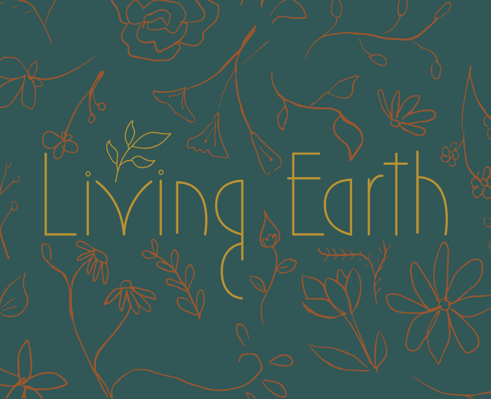

Living Earth
Avocado pit and skin dye: When I first began my natural dye journey, discovering very unassuming kitchen scraps as tannin-rich dyes took me by surprise. All of these years and I never knew that avocado pits and skins, for example, deliver color-fast hues of pink. Yes, you read that right. Pink!
Words about golden rod. I know this isn't golden rod
Words about marigolds.
Let's chat about the do's and don'ts of extracting dye from these parts of the avocado. There are two methods to saving or preserving avocado pits and skins. First, any excess fruit must be scrubbed off if you are to avoid mold in the preserving process. Second, they need to be set out to air dry in a well ventilated area. From here, you have two options. You can either store your now clean and dry pits and skins in a container in the freezer or place them in a ventilated container (cardboard with slits of holes cut in it works great) and keep in a cool, dry place. I personally don't have adequate space in my freezer, so I practice the second method and have never had an issue with my dye turning out pink and perfect!
